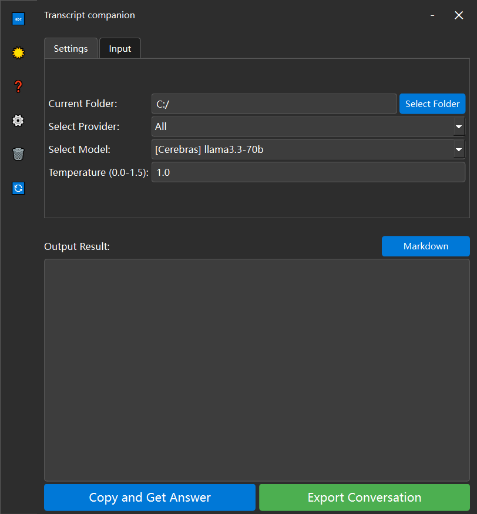

Interface Preview
Experience our polished and intuitive user interface


A sophisticated platform leveraging cutting-edge LLM technologies to transform and analyze speech transcripts with unprecedented precision.
Sophisticated design with customizable themes and efficient workflow organization.
Seamless integration with cutting-edge LLM providers including Cerebras, Groq, and Google Gemini.
Comprehensive visual processing with OCR, image analysis, and vision model support.
Experience AI responses as they unfold with our advanced streaming technology.
Full multilingual support with seamless switching between Chinese and English interfaces.
Meticulously crafted light and dark themes for optimal viewing experience.
git clone https://github.com/Franklyc/Transcript-companion.git
cd Transcript-companion
pip install -r requirements.txtconfig.py.example → config.pyprefix.py.example → prefix.pypython main.py